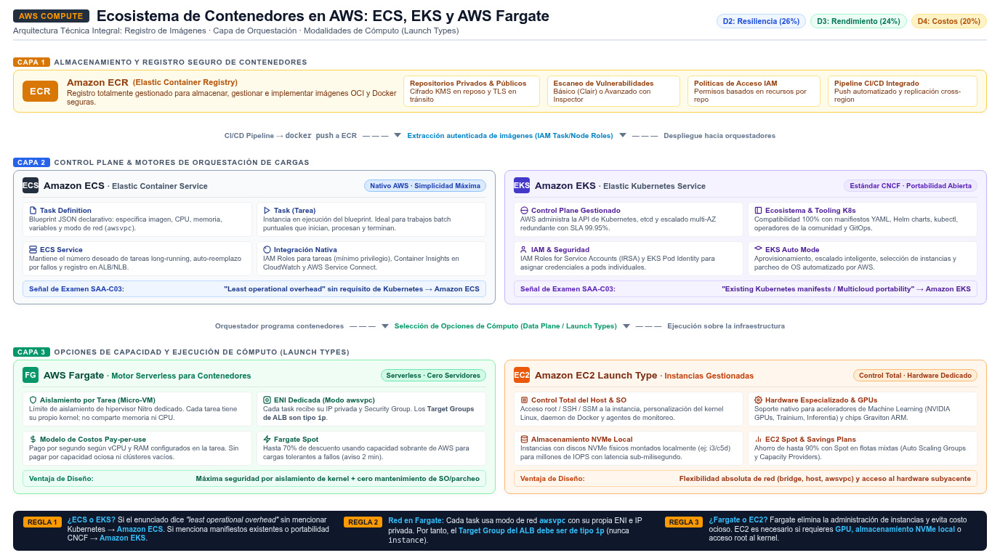

Contenedores: ECS, EKS, ECR y Fargate Container services on AWS
Cuatro piezas que forman el stack de contenedores de AWS: dos orquestadores, un registro y un motor serverless — elige bien cuál gobierna cada workload.
Los contenedores empaquetan tu aplicación con sus dependencias en unidades portátiles, y AWS te da el ecosistema completo para ejecutarlos: Amazon ECS y Amazon EKS son los orquestadores (quién decide dónde y cuántos contenedores corren), Amazon ECR es el registro privado donde viven las imágenes, y AWS Fargate es el motor de cómputo que elimina los servidores debajo de los contenedores. La analogía del puerto: las imágenes de ECR son los contenedores de mercancía en el almacén, el orquestador (ECS o EKS) es la grúa que los reparte por los barcos, y Fargate es alquilar espacio en barcos gestionados por AWS en lugar de comprar y operar los tuyos.
El examen no pregunta YAML de Kubernetes: pregunta la decisión. Si el equipo ya vive en Kubernetes y tiene manifiestos, EKS. Si el equipo prefiere simplicidad gestionada por AWS y no necesita Kubernetes, ECS. Si además no quieren administrar nodos de ninguna clase, Fargate como capacity debajo de ECS (o EKS con Fargate profiles). Esa cadena de razonamiento — equipo, estandarización y sobrecarga operativa — es lo que resuelve el 90% de las preguntas de contenedores de SAA-C03.
Los cuatro conceptos de ECS que lo explican todo
ECS se entiende con su vocabulario oficial: el task definition es el plano de la aplicación (imagen, CPU, memoria, puertos, variables de entorno), el cluster es la infraestructura donde corren, la task es una ejecución puntual (como un batch job que corre y se detiene), y el service mantiene corriendo un número deseado de tareas de larga vida, stateless, con load balancing. ECS viene en tres capas — capacidad, controlador (scheduler) y provisioning — y la capa de capacidad tiene cuatro opciones: Amazon EC2 (eliges tipo y gestionas la capacidad), Fargate (serverless, pay-as-you-go), ECS Managed Instances (AWS provisiona, parchea y escala instancias por ti, manteniendo acceso a GPU y tipos especializados) y ECS Anywhere (registra servidores on-premises al clúster).
EKS, por su parte, es managed Kubernetes: AWS opera el control plane (API server, etcd, scheduling) y tú gestionas los nodos — o ni eso con EKS Auto Mode, que además provisiona la infraestructura, selecciona tipos óptimos, escala, parchea el SO e integra seguridad de AWS. Es la clave para un enunciado que dice "existing Kubernetes application, no refactoring": EKS es Kubernetes-conformant certificado, así que las apps y el tooling de la comunidad funcionan sin cambios. La integración con IAM (roles para nodos y service accounts) y con ECR/ELB/CloudWatch es lo que lo hace "AWS-nativo" por dentro.
| Término | Servicio | Qué significa |
|---|---|---|
| Task definition | ECS | Blueprint en JSON de la aplicación: imagen, CPU, memoria, puertos, variables de entorno, modo de red. |
| Task | ECS / Fargate | Una ejecución del blueprint — corre y se detiene (como un batch job). En Fargate es la unidad de aislamiento con ENI propia. |
| Service | ECS / EKS | Mantiene el número deseado de tareas de larga vida y las reparte tras el load balancer. |
| Cluster | ECS / EKS | El conjunto de capacidad y tareas registradas — donde viven los services. |
| Node | EKS | Instancia EC2 (o Fargate) registrada al cluster como worker del data plane de Kubernetes. |
| Criterio | Amazon ECS | Amazon EKS | AWS Fargate |
|---|---|---|---|
| Qué es | Orquestador propietario de AWS, fully managed | Kubernetes gestionado (control plane administrado) | Motor de cómputo serverless para contenedores (no orquestador) |
| Modelo mental | Simplicidad AWS-nativa: task definitions y services | Ecosistema estándar K8s: pods, deployments, helm | Sin servidores: defines CPU y memoria por task |
| Control de nodos | Opcional: EC2, ECS Managed Instances, on-prem | EC2 managed groups, self-managed, Auto Mode | Ninguno: AWS lo administra todo |
| Cuándo es la respuesta | "Least operational overhead" sin requisito de Kubernetes | "Already uses Kubernetes" / portabilidad / tooling K8s | "No quiero gestionar instancias ni clusters" + aislamiento por task |
| Señal en el enunciado | Equipo pequeño, app stateless en AWS | Migración de K8s, multi-cloud, estándares de la empresa | Cargas intermitentes, microservicios, costo por uso |
Fargate: cada task es una isla con su ENI
Fargate es la respuesta de AWS a "contenedores sin servidores". Con él ya no eliges tipos de instancia ni decides cuándo escalar el clúster ni optimizas el empaquetado: declaras los requisitos de CPU y memoria en la task definition (parámetro requiresCompatibilities: FARGATE) y lanzas. La propiedad arquitectónica que el examen más explota: cada Fargate task tiene su propio límite de aislamiento — no comparte kernel, ni CPU, ni memoria, ni elastic network interface con ninguna otra task. Esa ENI propia (modo de red awsvpc) tiene una consecuencia práctica muy preguntada: el target group de tu load balancer debe ser de tipo ip, no instance, porque detrás del balanceador hay ENIs, no instancias EC2.
Los servicios Fargate soportan ALB (HTTP/HTTPS, capa 7), NLB (TCP/UDP, capa 4) y Gateway Load Balancer. Las versiones de plataforma definen el runtime (Amazon Linux 2 1.3.0, Bottlerocket 1.4.0, Windows 2019) y cada task nueva corre siempre en la revisión parcheada más reciente. Para trabajo interrumpible existe Fargate Spot: tasks sobre capacidad sobrante con descuento, interrumpibles con aviso de dos minutos — el primo de EC2 Spot para contenedores. Y como el consumo se factura por vCPU y memoria, Fargate es la respuesta natural a "cargas esporádicas sin costo de capacidad ociosa".

ECR: el registro privado de imágenes
Antes de ejecutar, las imágenes deben vivir en algún sitio seguro, y ahí entra Amazon ECR: un registro gestionado, seguro y escalable para imágenes Docker y OCI (y artefactos OCI compatibles). Sus dos propiedades examinables: los repositorios son privados por defecto y se protegen con permisos basados en recursos de IAM — puedes conceder acceso a usuarios, roles o instancias EC2 concretas para hacer push y pull. La integración es directa con ECS y EKS (los nodos extraen la imagen con los permisos de su rol), y el pipeline clásico que el examen describe es "CI hace push a ECR → el orquestador despliega la nueva imagen". Si el enunciado pregunta por "almacenar imágenes de contenedores de forma segura con permisos IAM", es ECR, no S3 ni Docker Hub.
control plane gestionado"] K -->|"No"| S{"¿Gestionar servidores o nodos?"} S -->|"No"| FAR["Fargate
serverless por task"] S -->|"Sí, control total"| ECS2["ECS con instancias EC2
o ECS Managed Instances"] EKS --> C{"¿Quién gestiona los nodos?"} C -->|"Nadie"| FARP["EKS con Fargate"] C -->|"AWS o yo"| NODES["EKS Auto Mode o nodos gestionados"] classDef navy fill:#EFF6FF,stroke:#3B82F6,stroke-width:2px,color:#1E293B classDef green fill:#F0FDF4,stroke:#10B981,stroke-width:2px,color:#1E293B classDef amber fill:#FFF7ED,stroke:#F59E0B,stroke-width:2px,color:#1E293B class Q,K,S,C navy class EKS,ECS2 green class FAR,FARP,NODES amber
awsvpc y el target group del ALB es siempre tipo ip.
- Task definition = blueprint; task = ejecución puntual; service = mantener N tareas long-running; cluster = la capacidad.
- Capacidad en ECS: EC2, Fargate, ECS Managed Instances, ECS Anywhere.
- EKS = Kubernetes gestionado y certificado; Auto Mode extiende la gestión a los nodos.
- Fargate = serverless por task: kernel, CPU, memoria y ENI propios — aislamiento máximo.
- Balanceo de Fargate: ALB/NLB/GWLB con target groups de tipo ip (modo awsvpc).
- Fargate Spot: descuento a cambio de interrupciones con 2 minutos de aviso.
- ECR: registro privado con permisos IAM basados en recursos; fuente de imágenes de ECS/EKS.
- CMP-17 Amazon ECS — Developer Guide Welcome (terminología, capacity) · docs.aws.amazon.com/AmazonECS/latest/developerguide/Welcome.html
- CMP-18 Amazon EKS — What is Amazon EKS (managed Kubernetes) · docs.aws.amazon.com/eks/latest/userguide/what-is-eks.html
- CMP-19 AWS Fargate — Serverless compute for containers · docs.aws.amazon.com/AmazonECS/latest/developerguide/AWS_Fargate.html
- CMP-20 Amazon ECR — What is (container registry) · docs.aws.amazon.com/AmazonECR/latest/userguide/what-is-ecr.html